Projects
Active Husky is a cross-platform fitness application designed to support group fitness programs by providing users with access to class schedules, fitness resources, and streamlined program management.
The application was built for iOS and Android using React Native and Expo, with a supporting backend infrastructure designed to handle user activity, scheduling, and core application operations.
The system includes a scalable backend built with Node.js, Express.js, and MongoDB, along with an administrative dashboard developed using React, Next.js, and Tailwind CSS for managing application content and fitness program operations.
The project focuses on creating a reliable and efficient platform that improves the organization, accessibility, and management of group fitness services.
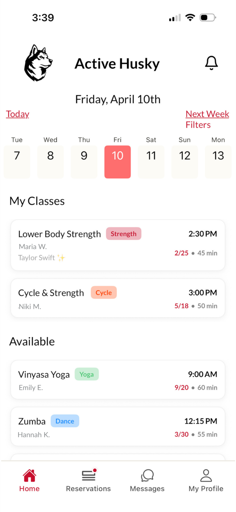
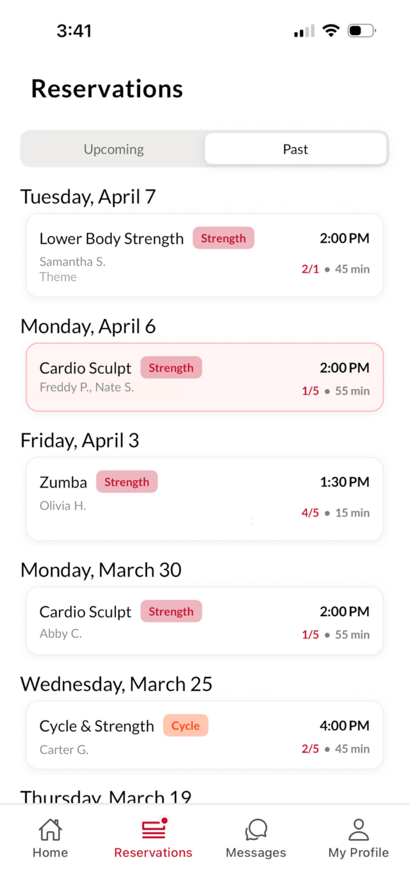
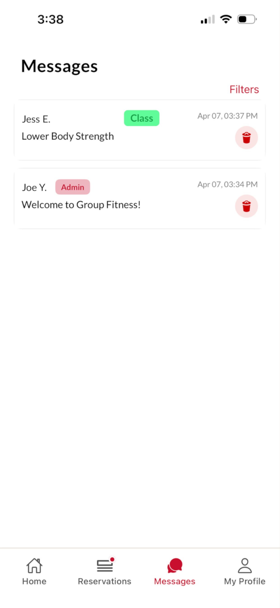
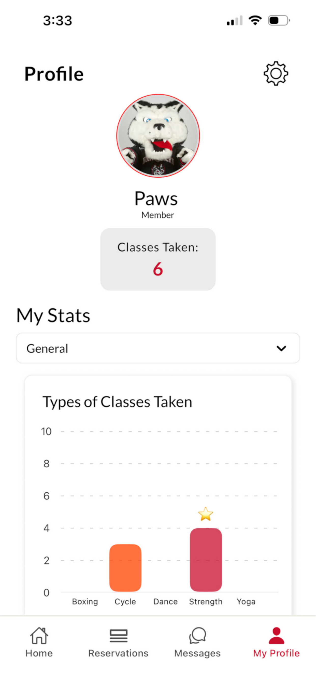
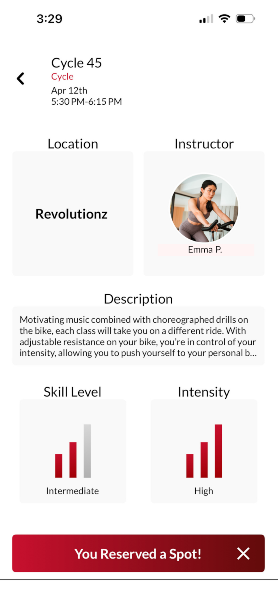
This project focused on building an automated pipeline for creating Japanese-to-Mongolian vocabulary flashcards from scanned learning materials.
The system processes cropped textbook images, extracts multilingual text through OCR, and organizes the results into structured data suitable for Anki import.
To address challenges with multilingual OCR, the pipeline separates text by language and writing system, applies Unicode-based filtering to improve extraction quality, and uses spatial information such as Y-axis positioning to correctly associate definitions across different languages.
The final output is a collection of automatically generated Anki flashcards, reducing the manual effort required to create vocabulary study materials.
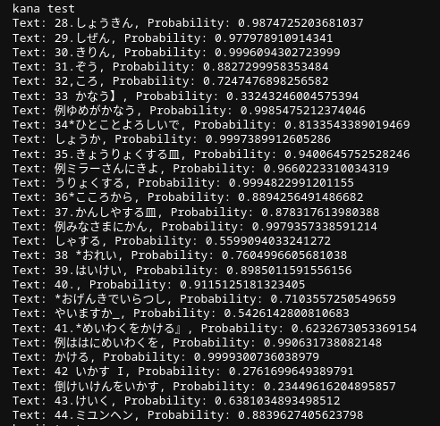
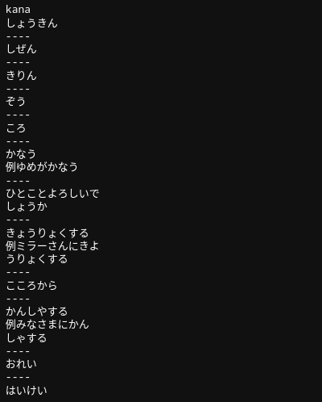
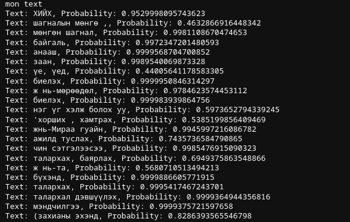
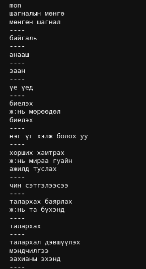
A machine learning project exploring the use of deep neural networks to predict future earnings beat performance from historical financial data.
Built with PyTorch using financial metrics from SimFin, the model analyzes key company fundamentals including gross margin, operating margin, net margin, debt-to-equity ratio, and current ratio.
Model performance and prediction accuracy are evaluated and visualized using Matplotlib.
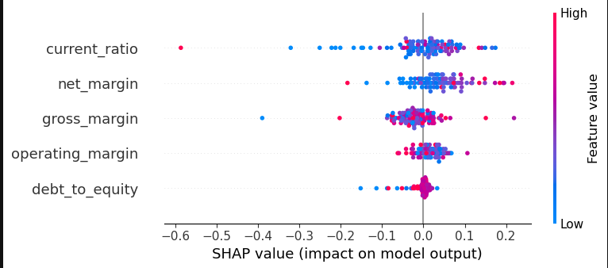
A full stack webapp for creating and organizing your tasks
Using Next.js, React, Tailwind CSS, and typescript for frontend, Node.js for backend, PostgreSQL for database, and AWS for deployment.
RDS used for SQL data matching, EC2 for backend hosting and Amplify for frontend deployment
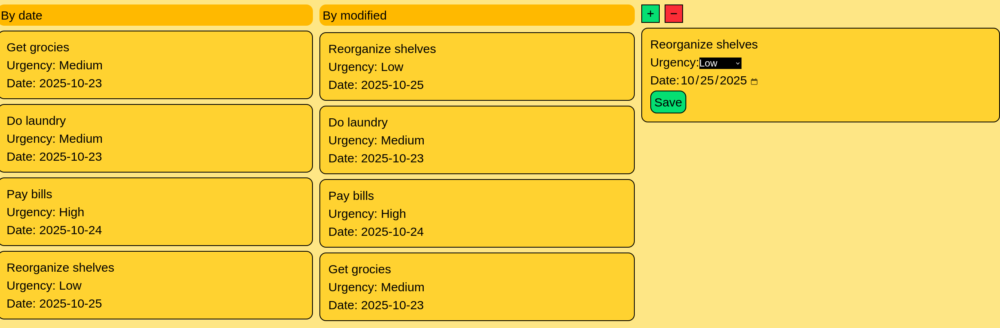
Box Office Record predictor
A Python project to predict a movie's success by its Box Office records and genre
with Linear Regression and Linear Perceptron using Numpy, Scikit Learn, Matplot lib and Plotly Express


3D endless runner with a Mongolian theme made in Unity.
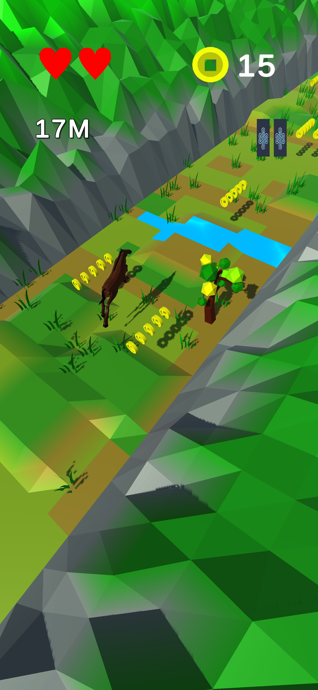
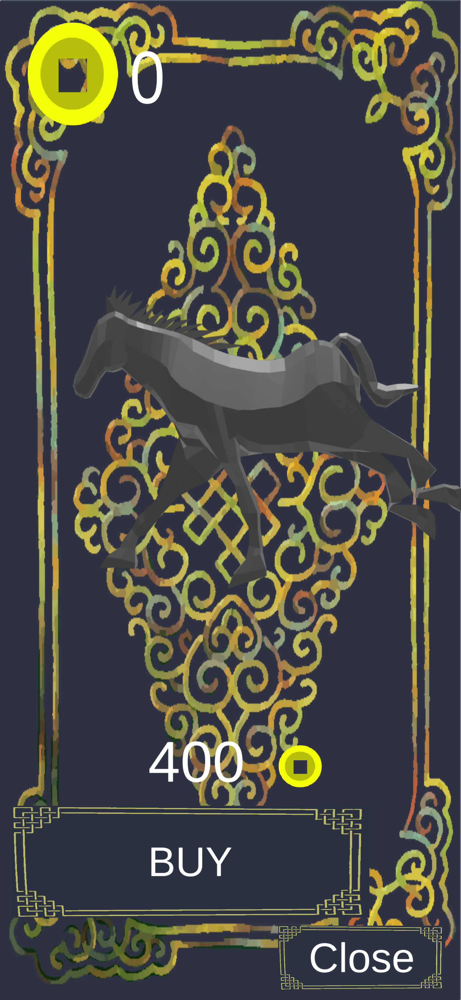
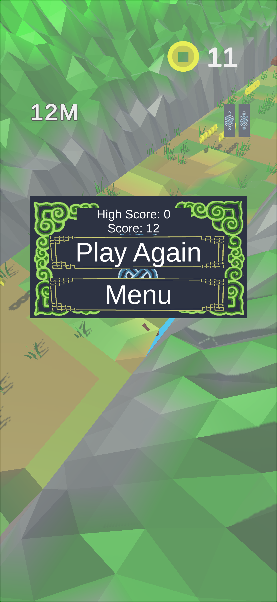
Document based empathy game set in the Jewish ghettos of WW2 Poland
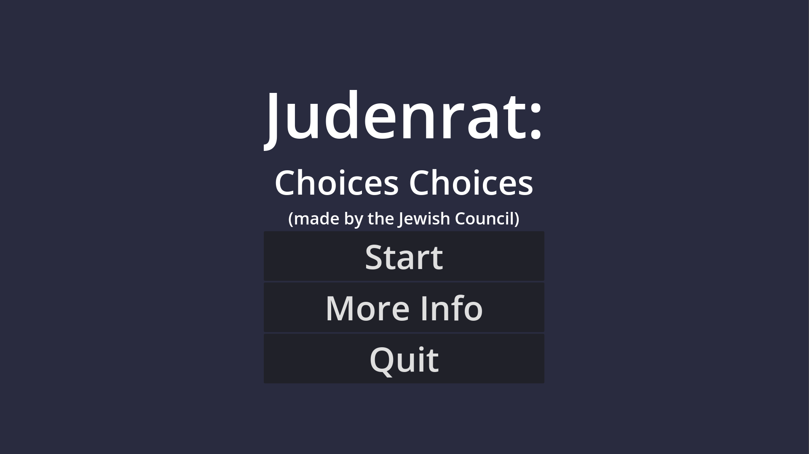
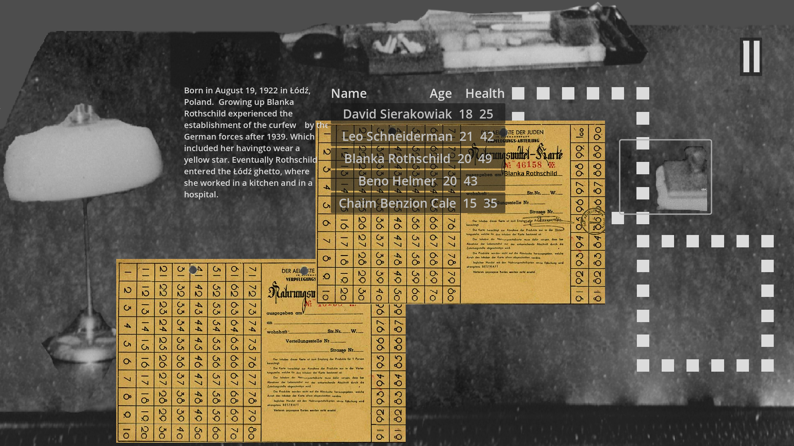
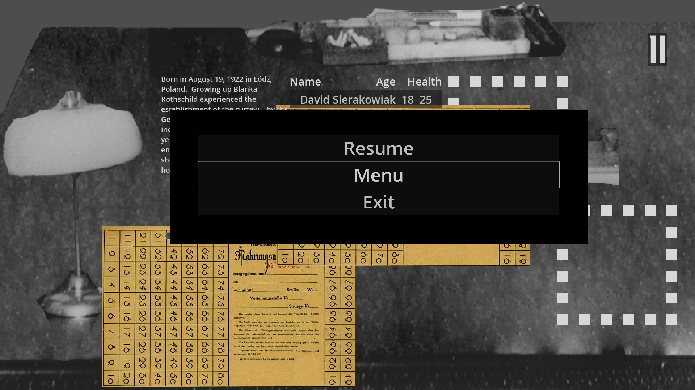